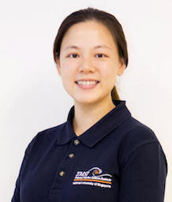

|
 |
NEO Mei Lin
|
Academic History
PhD, National University of Singapore (2013)
BSc(Hons), National University of Singapore (2009)
Research Interests
- Giant clams (Bivalvia: Tridacninae)
- Experimental Marine Ecology
- Invertebrate Larval Biology and Ecology
- Marine Biodiversity and Conservation
- Science Communication
TEDxACSIndependent talk: http://www.youtube.com/watch?v=tsoRmZ1gjww
Publications
Teo A, Guest J, Neo ML, Vicentuan K, Todd PA (2016). Quantification of coral sperm collected during a synchronous spawning event. PeerJ, 4: e2180. https://doi.org/10.7717/peerj.2180
Neo ML (2016). Chapter 5: More than Just a Pretty Mantle. In: Chan J, Sim S, Tan R (eds), Bugs and Quarks: Stories from the Asian Scientist Writing Prize 2015. Pp. 55–60.
Neo ML, Lee BY, Vicentuan K, Todd PA (2015). Dichromatism in the commensal shrimp, Anchistus miersi (De Man, 1888). Marine Biodiversity, 45(4): 877–878. doi:10.1007/s12526-014-0303-7
Neo ML, Vicentuan K, Teo SL-M, Erftemeijer PLA, Todd PA (2015). Larval ecology of the fluted giant clam, Tridacna squamosa, and its potential effects on dispersal models. Journal of Experimental Marine Biology and Ecology, 469: 76–82. http://dx.doi.org/10.1016/j.jembe.2015.04.012
Neo ML, Eckman W, Vicentuan-Cabaitan K, Teo SL-M, Todd PA (2015). The ecological significance of giant clams in coral reef ecosystems. Biological Conservation, 181: 111–123. http://dx.doi.org/10.1016/j.biocon.2014.11.004
Vicentuan-Cabaitan K, Neo ML, Teo SL-M, Eckman W, Todd PA (2014). Giant clams host a multitude of epibionts. Bulletin of Marine Science, 90(3): 795–796.
Neo ML, Loh KS (2014). Giant clam shells ‘graveyard’ at Pulau Semakau. Singapore Biodiversity Records, 2014: 248–249. https://lkcnhm.nus.edu.sg/nus/images/pdfs/sbr/2014/sbr2014-248-249.pdf
Neo ML (2014). New record of nudibranch Goniobranchus collingwoodi in Singapore. Singapore Biodiversity Records, 2014: 147. http://lkcnhm.nus.edu.sg/nis/sbr2014/sbr2014-147.pdf
Lim KKP, Neo ML, Ng D, Toh CH (2014). New record of Kuiter’s dragonet from Singapore. Singapore Biodiversity Records, 2014: 103–104. http://lkcnhm.nus.edu.sg/nis/sbr2014/sbr2014-103-104.pdf
Neo ML (2014). New record of nudibranch Trapania euryeia in Singapore. Singapore Biodiversity Records, 2014: 90. http://lkcnhm.nus.edu.sg/nis/sbr2014/sbr2014-090.pdf
Neo ML, Todd PA (2014). Coral reef scientists’ perceptions of giant clam conservation and ecology. Tentacle Newsletter No. 22. Pp. 35–36.
Neo ML, Erftemeijer PLA, van Beek JKL, van Maren DS, Teo SL-M, Todd PA (2013). Recruitment constraints in fluted giant clam (Tridacna squamosa) populations in Singapore waters – A dispersal model approach. PLoS ONE, 8(3): e58819. http://dx.doi.org/10.1371/journal.pone.0058819
Neo ML, Todd PA, Teo SL-M, Chou LM (2013). The effects of diet, temperature and salinity on survival of larvae of the fluted giant clam, Tridacna squamosa. Journal of Conchology, 41(3): 369–376.
Chong KY, Chua MAH, Neo ML, Ng DJJ, Yaakub SM, Toh TC, Wee AKS, Yong DL (2013). Chapter 28. Impacts of development on biodiversity in Singapore. In: Appleton J (ed), Values in Sustainable Development. Routledge Studies in Sustainable Development. Pp. 286–298.
Neo ML, Todd PA (2013). Conservation status reassessment of giant clams (Molluscs: Bivalvia: Tridacninae) in Singapore. Nature in Singapore, 6: 125–133. http://lkcnhm.nus.edu.sg/nis/bulletin2013/2013nis125-133.pdf
Neo ML, Todd PA (2012). Population density and genetic structures of the giant clams Tridacna crocea and T. squamosa on Singapore’s reefs. Aquatic Biology, 14: 265–275. http://www.int-res.com/articles/ab2011/14/b014p265.pdf
Neo ML, Todd PA (2012). Giant clams (Mollusca: Bivalvia: Tridacninae) in Singapore: History, Research and Conservation. Raffles Bulletin of Zoology, 25: 67–78. https://lkcnhm.nus.edu.sg/nus/pdf/PUBLICATION/Raffles%20Bulletin%20of%20Zoology/Supplements/Supplement%2025/s25rbz067-078.pdf
Neo ML, Todd PA (2011). Quantification of water squirting by juvenile fluted giant clams (Tridacna squamosa L.). Journal of Ethology, 29: 85–91. doi:10.1007/s10164-010-0226-0
Neo ML, Todd PA (2011). Predator-induced changes in fluted giant clam (Tridacna squamosa) shell morphology. Journal of Experimental Marine Biology and Ecology, 397: 21–26. http://dx.doi.org/10.1016/j.jembe.2010.11.008
Neo ML, Todd PA, Chou LM, Teo SL-M (2011). Spawning induction and larval development in the fluted giant clam, Tridacna squamosa (Bivalvia: Tridacnidae). Nature in Singapore, 4: 157–161.
Neo ML (2010). The taxonomic status of fig shells, with notes on Ficus variegata (Röding, 1798) (Mollusca: Gastropoda: Ficoidea: Ficidae). Nature in Singapore, 3: 117–123. http://lkcnhm.nus.edu.sg/nis/bulletin2010/2010nis117-123.pdf
Neo ML, Todd PA, Teo SL-M, Chou LM (2009). Can artificial substrates enriched with crustose coralline algae enhance larval settlement and recruitment in fluted giant clam (Tridacna squamosa)? Hydrobiologia, 625: 83–90. doi:10.1007/s10750-008-9698-0
Chim, CK, ML Neo & KS Loh (2009) The status in Singapore of Strombus (Dolomena) marginatus sowerbyorum Visser & Man In’t Veld, 2005 (Mollusca: Gastropoda: Strombidae). Nature in Singapore 2: 379–384. http://lkcnhm.nus.edu.sg/nis/bulletin2009/2009nis379-384.pdf